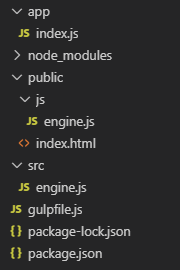
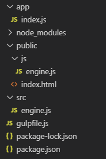
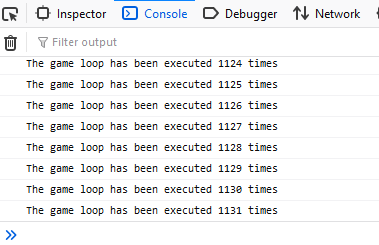
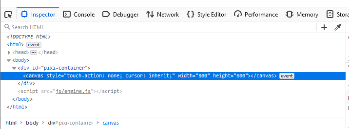
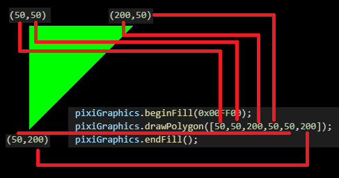

Lesson 0 - Intro
In this article we will be setting up the infrastructure to build the JavaScript file that will be served to the players, the main game loop, and the capability to draw things on the screen.
Setting up the tools
In a web browser context, all JavaScript code that needs to be executed by the end user must ultimately be served through a <script> tag.
While making our game, eventually we will have to split our code into multiple files, and it's not viable to use script tags for each of them.
This makes it necessary to have a build (or bundling) step, where all of our small JavaScript files are merged into a single file, which is then served to our players.
We'll be using Browserify and Gulp to do the code bundling.
These programs run in a Node.js context, so we'll need to install Node.js to use them.
After installing Node.js and initializing a project, we install Browserify and Gulp using the following command: npm install --save-dev gulp browserify vinyl-source-stream vinyl-buffer
Also, we'll need to install Gulp globally in our system using the following command: npm install -g gulp-cli
You may have noticed that we also installed vinyl-buffer and vinyl-source-stream. They are used by Browserify to manipulate files and streams.
We'll also need a web server to host the game.
Express is by far the most popular Node.js web server, so we'll install that by running the following command: npm install --save express
Project directory structure
Our project has three primary directories: app, public, and src. We'll need to create them all.
The app directory is used to host the Node.js web server that will serve our HTML and JS files during development.
In the app directory, we'll create a file, index.js, and place the following code there:
const express = require('express');
const app = express();
const server = require('http').createServer(app);
const path = require('path');
const port = 8080;
app.use('/public', express.static(path.resolve(__dirname,'..','public')));
app.get('/', (req,res) => {
res.redirect('/public');
});
server.listen(port);
console.log('started on ' + port);
The public directory is used to host the files that will be served by the web server.
Let's create an index.html file in there, and put the following code in there:
<!doctype html> <html> <head> <title>Made using the MVP engine</title> </head> <body> <div>Hello game</div> <script src="/public/js/engine.js"></script> </body> </html>Pay particular attention to the
<script> tag, which is referencing a file in the public directory which does not exist yet.
This is the bundle file that will be generated by Gulp and Browserfiy, so we don't have to create it now.
Finally, the src directory is used to store our game engine JS files.
The entry point of the game will be the engine.js file, and it serves a similar role to main() function in C++, Java, and C#.
We'll create the engine.js file, place it in the src directory, and put the following code there:
console.log("hello game");
The files in this directory will not be served directly by the game server, but will be bundled together using Gulp and Browserify.
The resulting bundle file will be placed in the public directory, and will contain the entire game in a single file.
Running Gulp and building our game
Gulp is used to run various maintenance tasks in a project, and in our case we'll use it to bundle our game engine into a single file.
The tasks are defined in a file called gulpfile.js, so let's create it and place it in the root directory of our project.
Let's place the following code in there:
const gulp = require('gulp');
const browserify = require('browserify');
const buffer = require('vinyl-buffer');
const source = require('vinyl-source-stream');
function bundle() {
return browserify({entries:`src/engine.js`})
.bundle()
.pipe(source("engine.js"))
.pipe(buffer())
.pipe(gulp.dest(`public/js`));
}
function watch() {
return gulp.watch("src/**/*.js", gulp.series("default"));
}
gulp.task("default", bundle);
gulp.task("watch", watch);
There are two tasks in the gulpfile, default and watch.
The default task runs Browserify on the src/engine.js file, bundles any other files used by it (none at the moment), and places the resulting file in the public/js/engine.js file.
The watch task keeps track of the JS files inside the src directory, then runs the default task if it detects any changes.
It's very handy since we don't have to run Gulp every time we want to make a bundle, but the bundle will be made on any change of the code.
Let's try to make a bundle right now. To run the default task, type the following command in the terminal:
gulp
The output should look something like this:
 Notice the new file in the
Notice the new file in the public/js directory. This file is the bundled engine, and it was created by Gulp and Browserify.
We have everything we need to test our development pipeline. Go ahead and run the web server using the following command:
node app/index.js
Then, navigate to http://localhost:8080 using your browser, and open the development console.
If everything worked correctly, you should see this message there:
 At this point, your project directory should look something like this:

At this point, your project directory should look something like this:

The game loop
The game loop (or main loop) is the heart of a video game, and it gives the video game a sense of progress over time. Essentially, the game loop can be thought as an infinite loop that runs at a steady state instead of as fast as it can. The primary function of a game loop is to gather user input, advance the game by a small amount, display the results to the user, and repeat this forever.
As mentioned before, the game loop runs at a constant rate. One execution of the game loop is called a frame (or tick), and the time between two frames is called a timestep (or delta). To make the game simulation consistent, the game loop runs at a fixed timestep, even if the input and rendering may run at a different and variable timestep. A timestep of 16.6666ms would run the game loop 60 times per second, or 60 FPS.
Because programming a game loop is quite complicated, we won't make our own, but we'll use a library called mainloop.js.
To install it, run the following command:
npm install --save mainloop.js
Including the mainloop.js library in our engine is very easy, all we have to do is use the require() function at the top of our engine.js file, exactly the same as in Node.js.
A small example of how a working game loop would look is presented here:
const MainLoop = require("mainloop.js");
let loopCounter = 0;
MainLoop.setUpdate(() => {
console.log("The game loop has been executed " + loopCounter + " times.");
loopCounter++;
}).start();
Save this code to the engine.js file, run gulp to build the game, and navigate to http://localhost:8080 to see it in action.
Open the development console, and if it looks something like this, it means the game loop is running successfully:

Note the setUpdate() function. The callback here is the heart of the game loop, and this function runs every frame.
The entire game world is simulated in this function, including physics, AI, game rules, and most other systems that make up a video game.
Setting up PixiJS
Almost all video games need some sort of visual display, and ours will be no different.
Just like the game loop, programming an entire graphical system is very complicated, so we'll use a library called PixiJS.
Install PixiJS using this command:
npm install --save pixi.js
Before adding PixiJS to our game, we must first add a container element in our public/index.html file.
PixiJS draws the graphics in an HTML <canvas> element, so this canvas will need to be attached to this container.
We'll give this container a prominent ID, and it should look something like this:
<!doctype html> <html> <head> <title>Made using the MVP engine</title> </head> <body> <div id="pixi-container"></div>> <script src="/public/js/engine.js"></script> </body> </html>
Now that the PixiJS container exists, we can go ahead and add the PixiJS code to our game, in the src/engine.js file.
It should look something like this:
const MainLoop = require("mainloop.js");
const PIXI = require("pixi.js");
let pixiApp = new PIXI.Application({antialias: true});
let pixiContainer = document.getElementById("pixi-container");
pixiContainer.appendChild(pixiApp.view);
let loopCounter = 0;
MainLoop.setUpdate(() => {
console.log("The game loop has been executed " + loopCounter + " times.");
loopCounter++;
}).start();
After building the game and refreshing the page, you should see a black rectangle, which is the default PixiJS background color.
We can also inspect the page using the browser's development tools, and it should look something like this:

Drawing things on the screen with PixiJS
Let's draw something a bit more interesting than a black screen.
One of the features of PixiJS is the ability to draw primitive shapes, such as lines, circles, rectangles, and other polygons.
This is done using the PIXI.graphics class, and all we have to do is make an instance of that class and attach it to the default PixiJS stage.
Here's how our engine.js file would look like:
const MainLoop = require("mainloop.js");
const PIXI = require("pixi.js");
let pixiApp = new PIXI.Application({antialias: true});
let pixiContainer = document.getElementById("pixi-container");
let pixiGraphics = new PIXI.Graphics();
pixiApp.stage.addChild(pixiGraphics);
pixiContainer.appendChild(pixiApp.view);
let loopCounter = 0;
MainLoop.setUpdate(() => {
console.log("The game loop has been executed " + loopCounter + " times.");
loopCounter++;
}).start();
If the browser console is not giving out any errors, we've successfully added the graphics object to PixiJS.
Drawing using the PIXI.graphics class is quite easy. Let's draw a triangle and examine the details:
pixiGraphics.beginFill(0x00FF00); pixiGraphics.drawPolygon([60,70,190,50,40,200]); pixiGraphics.endFill();We should see a green triangle on the black canvas.
Notice the three methods, beginFill(), drawPolygon(), and endFill().
beginFill() initializes the PIXI.graphics drawing method, and also sets the fill color of the drawn shape.
In our case, the first parameter of beginFill() is a hexadecimal code representing the color green in the RGB color space.
drawPolygon() is responsible for actually drawing the triangle on the screen. It's accepts an array of numbers as an argument.
These numbers are the coordinates of the vertices of the triangle, and are ordered such that the first element of the array is the x coordinate of the first point,
the second element is the y coordinate of the first point, the third element is the x coordinate of the second point, and so on.

endFill() finishes drawing the polygon. This function is needed so that subsequent calls to beginFill() will draw other polygons instead of continuing the current polygon.
The final version of the engine.js file should look like this:
const MainLoop = require("mainloop.js");
const PIXI = require("pixi.js");
let pixiApp = new PIXI.Application({antialias: true});
let pixiContainer = document.getElementById("pixi-container");
let pixiGraphics = new PIXI.Graphics();
pixiGraphics.beginFill(0x00FF00);
pixiGraphics.drawPolygon([60,70,190,50,40,200]);
pixiGraphics.endFill();
pixiApp.stage.addChild(pixiGraphics);
pixiContainer.appendChild(pixiApp.view);
let loopCounter = 0;
MainLoop.setUpdate(() => {
console.log("The game loop has been executed " + loopCounter + " times.");
loopCounter++;
}).start();
Conclusion
The web and JavaScript hold great promise as gaming platforms. The ability to distribute games and updates just by sharing a link is unmatched by any platform, and is the reason for the web's dominance in business and productivity apps. I hope to show that the same capability is present in web games as well, and that JavaScript is mature enough to be not just a teaching tool, but a primary development language for games.